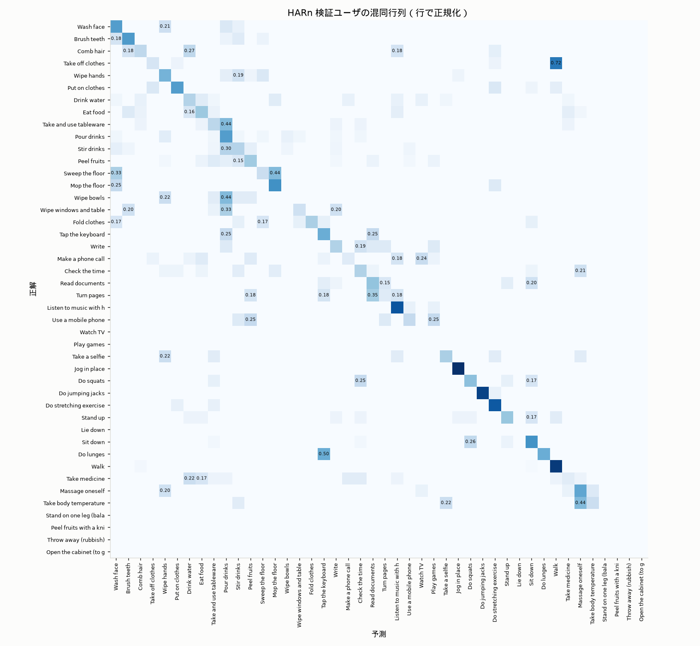
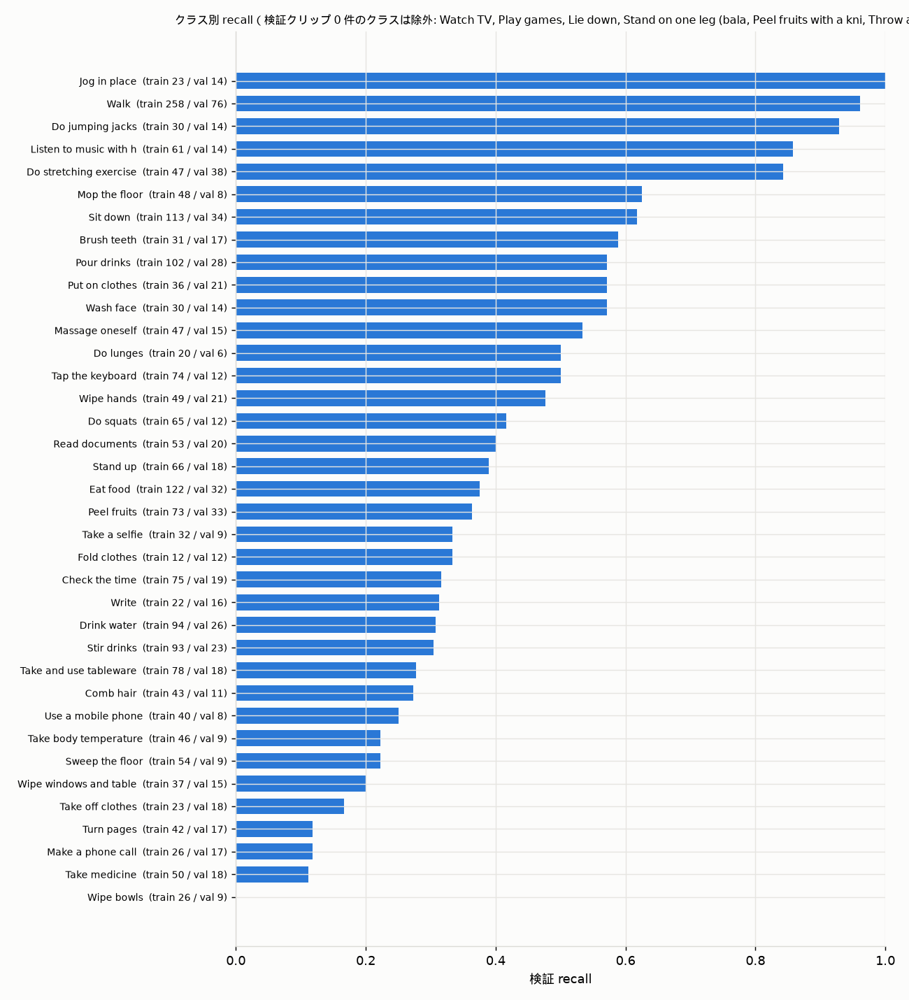
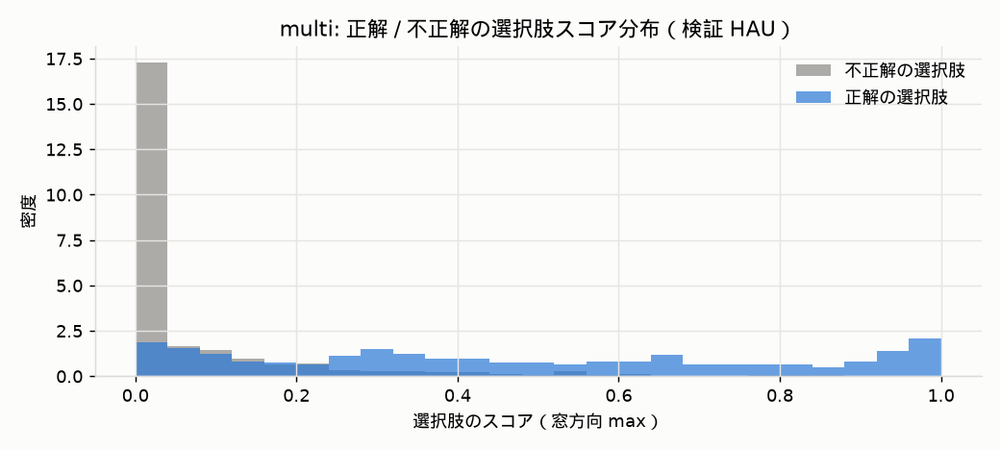

<title>CUHK-X 実験レポート</title><style>
:root{--bg:#fcfcfb;--ink:#0b0b0b;--ink2:#52514e;--muted:#8a8985;--grid:#e6e5e1;--card:#ffffff;--line:#dcdbd6;
 --s1:#2a78d6;--s2:#eb6834;--s3:#1baf7a;--s4:#eda100;--s5:#e87ba4;--base:#8a8985}
@media (prefers-color-scheme: dark){:root:not([data-theme=light]){--bg:#1a1a19;--ink:#fff;--ink2:#c3c2b7;--muted:#8f8e88;--grid:#33332f;--card:#232322;--line:#3a3a36;
 --s1:#3987e5;--s2:#d95926;--s3:#199e70;--s4:#c98500;--s5:#d55181}}
:root[data-theme=dark]{--bg:#1a1a19;--ink:#fff;--ink2:#c3c2b7;--muted:#8f8e88;--grid:#33332f;--card:#232322;--line:#3a3a36;
 --s1:#3987e5;--s2:#d95926;--s3:#199e70;--s4:#c98500;--s5:#d55181}
body{margin:0;background:var(--bg);color:var(--ink);font:15px/1.55 system-ui,-apple-system,"Segoe UI",Roboto,"Hiragino Sans","Noto Sans JP",sans-serif}
main{max-width:1040px;margin:0 auto;padding:32px 20px 64px}
h1{font-size:26px;margin:0 0 4px}h2{font-size:19px;margin:36px 0 10px;border-bottom:1px solid var(--line);padding-bottom:6px}
.sub{color:var(--ink2);margin:0 0 20px}
.tiles{display:flex;flex-wrap:wrap;gap:12px;margin:16px 0}
.tile{background:var(--card);border:1px solid var(--line);border-radius:10px;padding:12px 16px;min-width:140px;flex:1}
.tile .v{font-size:30px;font-weight:600;letter-spacing:-.02em}.tile .k{color:var(--ink2);font-size:13px}
.tile .d{color:var(--muted);font-size:12px}
table{border-collapse:collapse;width:100%;font-size:13.5px;font-variant-numeric:tabular-nums}
th,td{padding:6px 8px;border-bottom:1px solid var(--grid);text-align:right;white-space:nowrap}
th:first-child,td:first-child,th.l,td.l{text-align:left}th{color:var(--ink2);font-weight:600}
.wrap{overflow-x:auto}.card{background:var(--card);border:1px solid var(--line);border-radius:10px;padding:14px 16px;margin:12px 0}
svg text{fill:var(--ink2);font-size:12px}svg .grid{stroke:var(--grid)}svg .axis{stroke:var(--line)}
svg .ink{fill:var(--ink)}.legend{display:flex;gap:16px;flex-wrap:wrap;font-size:13px;color:var(--ink2);margin:4px 0 0}
.sw{display:inline-block;width:12px;height:12px;border-radius:3px;vertical-align:-1px;margin-right:6px}
.notes p{margin:6px 0}.notes ul{margin:4px 0 4px 18px}.notes h3{font-size:16px;margin:18px 0 4px}
.small{color:var(--muted);font-size:12.5px}
</style><main><h1>CUHK-X Large Model Track 実験レポート</h1><p class="sub">骨格 Transformer + 映像特徴（凍結 CLIP）による動作認識 → 多肢選択 VQA。stage: 1 = HARn のみ、2 = +HAU 弱ラベル、3 = アンサンブル/融合、4 = 映像ヘッド単独。検証はユーザ単位の分割（user2, user8, user18, user22 を除外）。最終更新 2026-09-15 21:51 JST</p><div class="tiles"><div class="tile"><div class="k">検証 全体 accuracy（最良）</div><div class="v">68.8%</div><div class="d">fuse_D_vT64 · 偶然 18.0%</div></div><div class="tile"><div class="k">HARn 44 クラス精度（検証）</div><div class="v">50.1%</div><div class="d">窓 16 フレーム · ストライド 5</div></div><div class="tile"><div class="k">実験数</div><div class="v">91</div><div class="d">1912 設定を評価</div></div></div><h2>最良モデルのカテゴリ別 accuracy</h2><div class='card'><svg viewBox="0 0 940 282" width="100%" role="img" aria-label="category accuracy"><line class="grid" x1="150.0" y1="10" x2="150.0" y2="272"/><text x="150.0" y="282" text-anchor="middle" font-size="11">0%</text><line class="grid" x1="332.5" y1="10" x2="332.5" y2="272"/><text x="332.5" y="282" text-anchor="middle" font-size="11">25%</text><line class="grid" x1="515.0" y1="10" x2="515.0" y2="272"/><text x="515.0" y="282" text-anchor="middle" font-size="11">50%</text><line class="grid" x1="697.5" y1="10" x2="697.5" y2="272"/><text x="697.5" y="282" text-anchor="middle" font-size="11">75%</text><line class="grid" x1="880.0" y1="10" x2="880.0" y2="272"/><text x="880.0" y="282" text-anchor="middle" font-size="11">100%</text><text x="140" y="35" text-anchor="end">single</text><rect x="150" y="20" width="614.9" height="20" rx="4" fill="var(--s1)"><title>single: 84.2% (chance 25.0%)</title></rect><line x1="332.5" y1="17" x2="332.5" y2="43" stroke="var(--base)" stroke-width="2" stroke-dasharray="3 2"/><text class="ink" x="770.9" y="35" font-size="12">84.2%</text><text x="140" y="71" text-anchor="end">multi</text><rect x="150" y="56" width="435.5" height="20" rx="4" fill="var(--s1)"><title>multi: 59.7% (chance 6.7%)</title></rect><line x1="198.7" y1="53" x2="198.7" y2="79" stroke="var(--base)" stroke-width="2" stroke-dasharray="3 2"/><text class="ink" x="591.5" y="71" font-size="12">59.7%</text><text x="140" y="107" text-anchor="end">combination</text><rect x="150" y="92" width="679.4" height="20" rx="4" fill="var(--s1)"><title>combination: 93.1% (chance 25.0%)</title></rect><line x1="332.5" y1="89" x2="332.5" y2="115" stroke="var(--base)" stroke-width="2" stroke-dasharray="3 2"/><text class="ink" x="835.4" y="107" font-size="12">93.1%</text><text x="140" y="143" text-anchor="end">sequence</text><rect x="150" y="128" width="359.9" height="20" rx="4" fill="var(--s1)"><title>sequence: 49.3% (chance 4.2%)</title></rect><line x1="180.4" y1="125" x2="180.4" y2="151" stroke="var(--base)" stroke-width="2" stroke-dasharray="3 2"/><text class="ink" x="515.9" y="143" font-size="12">49.3%</text><text x="140" y="179" text-anchor="end">emotion</text><rect x="150" y="164" width="236.4" height="20" rx="4" fill="var(--s1)"><title>emotion: 32.4% (chance 25.0%)</title></rect><line x1="332.5" y1="161" x2="332.5" y2="187" stroke="var(--base)" stroke-width="2" stroke-dasharray="3 2"/><text class="ink" x="392.4" y="179" font-size="12">32.4%</text><text x="140" y="215" text-anchor="end">object_interaction</text><rect x="150" y="200" width="687.1" height="20" rx="4" fill="var(--s1)"><title>object_interaction: 94.1% (chance 25.0%)</title></rect><line x1="332.5" y1="197" x2="332.5" y2="223" stroke="var(--base)" stroke-width="2" stroke-dasharray="3 2"/><text class="ink" x="843.1" y="215" font-size="12">94.1%</text><text x="140" y="251" text-anchor="end">overall</text><rect x="150" y="236" width="501.9" height="20" rx="4" fill="var(--s1)"><title>overall: 68.8% (chance 18.0%)</title></rect><line x1="281.4" y1="233" x2="281.4" y2="259" stroke="var(--base)" stroke-width="2" stroke-dasharray="3 2"/><text class="ink" x="657.9" y="251" font-size="12">68.8%</text></svg><p class="small">点線は選択肢からの偶然正解率。</p></div><h2>窓長とストライドの探索（Stage 1）</h2><div class='card'><svg viewBox="0 0 940 320" width="100%" role="img" aria-label="全体 accuracy vs 窓長 T（フレーム）"><line class="grid" x1="60" y1="280.0" x2="920" y2="280.0"/><text x="52" y="284.0" text-anchor="end" font-size="11">50.6</text><line class="grid" x1="60" y1="214.0" x2="920" y2="214.0"/><text x="52" y="218.0" text-anchor="end" font-size="11">54.6</text><line class="grid" x1="60" y1="148.0" x2="920" y2="148.0"/><text x="52" y="152.0" text-anchor="end" font-size="11">58.6</text><line class="grid" x1="60" y1="82.0" x2="920" y2="82.0"/><text x="52" y="86.0" text-anchor="end" font-size="11">62.7</text><line class="grid" x1="60" y1="16.0" x2="920" y2="16.0"/><text x="52" y="20.0" text-anchor="end" font-size="11">66.7</text><text x="60.0" y="302" text-anchor="middle" font-size="11">8</text><text x="88.7" y="302" text-anchor="middle" font-size="11">12</text><text x="117.3" y="302" text-anchor="middle" font-size="11">16</text><text x="174.7" y="302" text-anchor="middle" font-size="11">24</text><text x="232.0" y="302" text-anchor="middle" font-size="11">32</text><text x="346.7" y="302" text-anchor="middle" font-size="11">48</text><text x="461.3" y="302" text-anchor="middle" font-size="11">64</text><text x="690.7" y="302" text-anchor="middle" font-size="11">96</text><text x="920.0" y="302" text-anchor="middle" font-size="11">128</text><text x="490.0" y="318" text-anchor="middle" font-size="11">窓長 T（フレーム）</text><path d="M60.0,86.5 L88.7,70.2 L117.3,16.0 L174.7,72.1 L232.0,88.3 L346.7,169.7 L461.3,178.7 L690.7,231.2 L920.0,280.0" fill="none" stroke="var(--s1)" stroke-width="2"/><circle cx="60.0" cy="86.5" r="4" fill="var(--s1)" stroke="var(--card)" stroke-width="2"><title>stride 5 · 窓長 T（フレーム）=8: 62.4</title></circle><circle cx="88.7" cy="70.2" r="4" fill="var(--s1)" stroke="var(--card)" stroke-width="2"><title>stride 5 · 窓長 T（フレーム）=12: 63.4</title></circle><circle cx="117.3" cy="16.0" r="4" fill="var(--s1)" stroke="var(--card)" stroke-width="2"><title>stride 5 · 窓長 T（フレーム）=16: 66.7</title></circle><circle cx="174.7" cy="72.1" r="4" fill="var(--s1)" stroke="var(--card)" stroke-width="2"><title>stride 5 · 窓長 T（フレーム）=24: 63.3</title></circle><circle cx="232.0" cy="88.3" r="4" fill="var(--s1)" stroke="var(--card)" stroke-width="2"><title>stride 5 · 窓長 T（フレーム）=32: 62.3</title></circle><circle cx="346.7" cy="169.7" r="4" fill="var(--s1)" stroke="var(--card)" stroke-width="2"><title>stride 5 · 窓長 T（フレーム）=48: 57.3</title></circle><circle cx="461.3" cy="178.7" r="4" fill="var(--s1)" stroke="var(--card)" stroke-width="2"><title>stride 5 · 窓長 T（フレーム）=64: 56.8</title></circle><circle cx="690.7" cy="231.2" r="4" fill="var(--s1)" stroke="var(--card)" stroke-width="2"><title>stride 5 · 窓長 T（フレーム）=96: 53.6</title></circle><circle cx="920.0" cy="280.0" r="4" fill="var(--s1)" stroke="var(--card)" stroke-width="2"><title>stride 5 · 窓長 T（フレーム）=128: 50.6</title></circle><text x="928.0" y="284.0" font-size="12">stride 5</text><path d="M60.0,70.2 L88.7,72.1 L117.3,54.0 L174.7,73.9 L232.0,90.1 L346.7,167.9 L461.3,180.5 L690.7,231.2 L920.0,274.6" fill="none" stroke="var(--s2)" stroke-width="2"/><circle cx="60.0" cy="70.2" r="4" fill="var(--s2)" stroke="var(--card)" stroke-width="2"><title>stride 10 · 窓長 T（フレーム）=8: 63.4</title></circle><circle cx="88.7" cy="72.1" r="4" fill="var(--s2)" stroke="var(--card)" stroke-width="2"><title>stride 10 · 窓長 T（フレーム）=12: 63.3</title></circle><circle cx="117.3" cy="54.0" r="4" fill="var(--s2)" stroke="var(--card)" stroke-width="2"><title>stride 10 · 窓長 T（フレーム）=16: 64.4</title></circle><circle cx="174.7" cy="73.9" r="4" fill="var(--s2)" stroke="var(--card)" stroke-width="2"><title>stride 10 · 窓長 T（フレーム）=24: 63.1</title></circle><circle cx="232.0" cy="90.1" r="4" fill="var(--s2)" stroke="var(--card)" stroke-width="2"><title>stride 10 · 窓長 T（フレーム）=32: 62.2</title></circle><circle cx="346.7" cy="167.9" r="4" fill="var(--s2)" stroke="var(--card)" stroke-width="2"><title>stride 10 · 窓長 T（フレーム）=48: 57.4</title></circle><circle cx="461.3" cy="180.5" r="4" fill="var(--s2)" stroke="var(--card)" stroke-width="2"><title>stride 10 · 窓長 T（フレーム）=64: 56.7</title></circle><circle cx="690.7" cy="231.2" r="4" fill="var(--s2)" stroke="var(--card)" stroke-width="2"><title>stride 10 · 窓長 T（フレーム）=96: 53.6</title></circle><circle cx="920.0" cy="274.6" r="4" fill="var(--s2)" stroke="var(--card)" stroke-width="2"><title>stride 10 · 窓長 T（フレーム）=128: 50.9</title></circle><text x="928.0" y="278.6" font-size="12">stride 10</text><path d="M60.0,84.7 L88.7,77.5 L117.3,64.8 L174.7,70.2 L232.0,82.9 L346.7,166.1 L461.3,189.6 L690.7,229.4 L920.0,276.4" fill="none" stroke="var(--s3)" stroke-width="2"/><circle cx="60.0" cy="84.7" r="4" fill="var(--s3)" stroke="var(--card)" stroke-width="2"><title>stride 20 · 窓長 T（フレーム）=8: 62.5</title></circle><circle cx="88.7" cy="77.5" r="4" fill="var(--s3)" stroke="var(--card)" stroke-width="2"><title>stride 20 · 窓長 T（フレーム）=12: 62.9</title></circle><circle cx="117.3" cy="64.8" r="4" fill="var(--s3)" stroke="var(--card)" stroke-width="2"><title>stride 20 · 窓長 T（フレーム）=16: 63.7</title></circle><circle cx="174.7" cy="70.2" r="4" fill="var(--s3)" stroke="var(--card)" stroke-width="2"><title>stride 20 · 窓長 T（フレーム）=24: 63.4</title></circle><circle cx="232.0" cy="82.9" r="4" fill="var(--s3)" stroke="var(--card)" stroke-width="2"><title>stride 20 · 窓長 T（フレーム）=32: 62.6</title></circle><circle cx="346.7" cy="166.1" r="4" fill="var(--s3)" stroke="var(--card)" stroke-width="2"><title>stride 20 · 窓長 T（フレーム）=48: 57.5</title></circle><circle cx="461.3" cy="189.6" r="4" fill="var(--s3)" stroke="var(--card)" stroke-width="2"><title>stride 20 · 窓長 T（フレーム）=64: 56.1</title></circle><circle cx="690.7" cy="229.4" r="4" fill="var(--s3)" stroke="var(--card)" stroke-width="2"><title>stride 20 · 窓長 T（フレーム）=96: 53.7</title></circle><circle cx="920.0" cy="276.4" r="4" fill="var(--s3)" stroke="var(--card)" stroke-width="2"><title>stride 20 · 窓長 T（フレーム）=128: 50.8</title></circle><text x="928.0" y="280.4" font-size="12">stride 20</text></svg><div class="legend"><span><i class="sw" style="background:var(--s1)"></i>stride 5</span><span><i class="sw" style="background:var(--s2)"></i>stride 10</span><span><i class="sw" style="background:var(--s3)"></i>stride 20</span></div></div><div class='card'><b>single</b><svg viewBox="0 0 940 240" width="100%" role="img" aria-label="single vs 窓長 T（フレーム）"><line class="grid" x1="60" y1="200.0" x2="920" y2="200.0"/><text x="52" y="204.0" text-anchor="end" font-size="11">65.6</text><line class="grid" x1="60" y1="154.0" x2="920" y2="154.0"/><text x="52" y="158.0" text-anchor="end" font-size="11">69.7</text><line class="grid" x1="60" y1="108.0" x2="920" y2="108.0"/><text x="52" y="112.0" text-anchor="end" font-size="11">73.8</text><line class="grid" x1="60" y1="62.0" x2="920" y2="62.0"/><text x="52" y="66.0" text-anchor="end" font-size="11">78.0</text><line class="grid" x1="60" y1="16.0" x2="920" y2="16.0"/><text x="52" y="20.0" text-anchor="end" font-size="11">82.1</text><text x="60.0" y="222" text-anchor="middle" font-size="11">8</text><text x="88.7" y="222" text-anchor="middle" font-size="11">12</text><text x="117.3" y="222" text-anchor="middle" font-size="11">16</text><text x="174.7" y="222" text-anchor="middle" font-size="11">24</text><text x="232.0" y="222" text-anchor="middle" font-size="11">32</text><text x="346.7" y="222" text-anchor="middle" font-size="11">48</text><text x="461.3" y="222" text-anchor="middle" font-size="11">64</text><text x="690.7" y="222" text-anchor="middle" font-size="11">96</text><text x="920.0" y="222" text-anchor="middle" font-size="11">128</text><text x="490.0" y="238" text-anchor="middle" font-size="11">窓長 T（フレーム）</text><path d="M60.0,92.0 L88.7,88.0 L117.3,16.0 L174.7,56.0 L232.0,84.0 L346.7,128.0 L461.3,172.0 L690.7,176.0 L920.0,200.0" fill="none" stroke="var(--s1)" stroke-width="2"/><circle cx="60.0" cy="92.0" r="4" fill="var(--s1)" stroke="var(--card)" stroke-width="2"><title>stride 5 · 窓長 T（フレーム）=8: 75.3</title></circle><circle cx="88.7" cy="88.0" r="4" fill="var(--s1)" stroke="var(--card)" stroke-width="2"><title>stride 5 · 窓長 T（フレーム）=12: 75.6</title></circle><circle cx="117.3" cy="16.0" r="4" fill="var(--s1)" stroke="var(--card)" stroke-width="2"><title>stride 5 · 窓長 T（フレーム）=16: 82.1</title></circle><circle cx="174.7" cy="56.0" r="4" fill="var(--s1)" stroke="var(--card)" stroke-width="2"><title>stride 5 · 窓長 T（フレーム）=24: 78.5</title></circle><circle cx="232.0" cy="84.0" r="4" fill="var(--s1)" stroke="var(--card)" stroke-width="2"><title>stride 5 · 窓長 T（フレーム）=32: 76.0</title></circle><circle cx="346.7" cy="128.0" r="4" fill="var(--s1)" stroke="var(--card)" stroke-width="2"><title>stride 5 · 窓長 T（フレーム）=48: 72.0</title></circle><circle cx="461.3" cy="172.0" r="4" fill="var(--s1)" stroke="var(--card)" stroke-width="2"><title>stride 5 · 窓長 T（フレーム）=64: 68.1</title></circle><circle cx="690.7" cy="176.0" r="4" fill="var(--s1)" stroke="var(--card)" stroke-width="2"><title>stride 5 · 窓長 T（フレーム）=96: 67.7</title></circle><circle cx="920.0" cy="200.0" r="4" fill="var(--s1)" stroke="var(--card)" stroke-width="2"><title>stride 5 · 窓長 T（フレーム）=128: 65.6</title></circle><text x="928.0" y="204.0" font-size="12">stride 5</text><path d="M60.0,88.0 L88.7,80.0 L117.3,60.0 L174.7,60.0 L232.0,92.0 L346.7,132.0 L461.3,164.0 L690.7,172.0 L920.0,192.0" fill="none" stroke="var(--s2)" stroke-width="2"/><circle cx="60.0" cy="88.0" r="4" fill="var(--s2)" stroke="var(--card)" stroke-width="2"><title>stride 10 · 窓長 T（フレーム）=8: 75.6</title></circle><circle cx="88.7" cy="80.0" r="4" fill="var(--s2)" stroke="var(--card)" stroke-width="2"><title>stride 10 · 窓長 T（フレーム）=12: 76.3</title></circle><circle cx="117.3" cy="60.0" r="4" fill="var(--s2)" stroke="var(--card)" stroke-width="2"><title>stride 10 · 窓長 T（フレーム）=16: 78.1</title></circle><circle cx="174.7" cy="60.0" r="4" fill="var(--s2)" stroke="var(--card)" stroke-width="2"><title>stride 10 · 窓長 T（フレーム）=24: 78.1</title></circle><circle cx="232.0" cy="92.0" r="4" fill="var(--s2)" stroke="var(--card)" stroke-width="2"><title>stride 10 · 窓長 T（フレーム）=32: 75.3</title></circle><circle cx="346.7" cy="132.0" r="4" fill="var(--s2)" stroke="var(--card)" stroke-width="2"><title>stride 10 · 窓長 T（フレーム）=48: 71.7</title></circle><circle cx="461.3" cy="164.0" r="4" fill="var(--s2)" stroke="var(--card)" stroke-width="2"><title>stride 10 · 窓長 T（フレーム）=64: 68.8</title></circle><circle cx="690.7" cy="172.0" r="4" fill="var(--s2)" stroke="var(--card)" stroke-width="2"><title>stride 10 · 窓長 T（フレーム）=96: 68.1</title></circle><circle cx="920.0" cy="192.0" r="4" fill="var(--s2)" stroke="var(--card)" stroke-width="2"><title>stride 10 · 窓長 T（フレーム）=128: 66.3</title></circle><text x="928.0" y="196.0" font-size="12">stride 10</text><path d="M60.0,84.0 L88.7,68.0 L117.3,56.0 L174.7,68.0 L232.0,84.0 L346.7,124.0 L461.3,176.0 L690.7,160.0 L920.0,196.0" fill="none" stroke="var(--s3)" stroke-width="2"/><circle cx="60.0" cy="84.0" r="4" fill="var(--s3)" stroke="var(--card)" stroke-width="2"><title>stride 20 · 窓長 T（フレーム）=8: 76.0</title></circle><circle cx="88.7" cy="68.0" r="4" fill="var(--s3)" stroke="var(--card)" stroke-width="2"><title>stride 20 · 窓長 T（フレーム）=12: 77.4</title></circle><circle cx="117.3" cy="56.0" r="4" fill="var(--s3)" stroke="var(--card)" stroke-width="2"><title>stride 20 · 窓長 T（フレーム）=16: 78.5</title></circle><circle cx="174.7" cy="68.0" r="4" fill="var(--s3)" stroke="var(--card)" stroke-width="2"><title>stride 20 · 窓長 T（フレーム）=24: 77.4</title></circle><circle cx="232.0" cy="84.0" r="4" fill="var(--s3)" stroke="var(--card)" stroke-width="2"><title>stride 20 · 窓長 T（フレーム）=32: 76.0</title></circle><circle cx="346.7" cy="124.0" r="4" fill="var(--s3)" stroke="var(--card)" stroke-width="2"><title>stride 20 · 窓長 T（フレーム）=48: 72.4</title></circle><circle cx="461.3" cy="176.0" r="4" fill="var(--s3)" stroke="var(--card)" stroke-width="2"><title>stride 20 · 窓長 T（フレーム）=64: 67.7</title></circle><circle cx="690.7" cy="160.0" r="4" fill="var(--s3)" stroke="var(--card)" stroke-width="2"><title>stride 20 · 窓長 T（フレーム）=96: 69.2</title></circle><circle cx="920.0" cy="196.0" r="4" fill="var(--s3)" stroke="var(--card)" stroke-width="2"><title>stride 20 · 窓長 T（フレーム）=128: 65.9</title></circle><text x="928.0" y="200.0" font-size="12">stride 20</text></svg><div class="legend"><span><i class="sw" style="background:var(--s1)"></i>stride 5</span><span><i class="sw" style="background:var(--s2)"></i>stride 10</span><span><i class="sw" style="background:var(--s3)"></i>stride 20</span></div></div><div class='card'><b>sequence</b><svg viewBox="0 0 940 240" width="100%" role="img" aria-label="sequence vs 窓長 T（フレーム）"><line class="grid" x1="60" y1="200.0" x2="920" y2="200.0"/><text x="52" y="204.0" text-anchor="end" font-size="11">12.7</text><line class="grid" x1="60" y1="154.0" x2="920" y2="154.0"/><text x="52" y="158.0" text-anchor="end" font-size="11">23.4</text><line class="grid" x1="60" y1="108.0" x2="920" y2="108.0"/><text x="52" y="112.0" text-anchor="end" font-size="11">34.1</text><line class="grid" x1="60" y1="62.0" x2="920" y2="62.0"/><text x="52" y="66.0" text-anchor="end" font-size="11">44.8</text><line class="grid" x1="60" y1="16.0" x2="920" y2="16.0"/><text x="52" y="20.0" text-anchor="end" font-size="11">55.6</text><text x="60.0" y="222" text-anchor="middle" font-size="11">8</text><text x="88.7" y="222" text-anchor="middle" font-size="11">12</text><text x="117.3" y="222" text-anchor="middle" font-size="11">16</text><text x="174.7" y="222" text-anchor="middle" font-size="11">24</text><text x="232.0" y="222" text-anchor="middle" font-size="11">32</text><text x="346.7" y="222" text-anchor="middle" font-size="11">48</text><text x="461.3" y="222" text-anchor="middle" font-size="11">64</text><text x="690.7" y="222" text-anchor="middle" font-size="11">96</text><text x="920.0" y="222" text-anchor="middle" font-size="11">128</text><text x="490.0" y="238" text-anchor="middle" font-size="11">窓長 T（フレーム）</text><path d="M60.0,121.4 L88.7,79.1 L117.3,16.0 L174.7,85.2 L232.0,85.2 L346.7,121.4 L461.3,127.5 L690.7,163.7 L920.0,194.0" fill="none" stroke="var(--s1)" stroke-width="2"/><circle cx="60.0" cy="121.4" r="4" fill="var(--s1)" stroke="var(--card)" stroke-width="2"><title>stride 5 · 窓長 T（フレーム）=8: 31.0</title></circle><circle cx="88.7" cy="79.1" r="4" fill="var(--s1)" stroke="var(--card)" stroke-width="2"><title>stride 5 · 窓長 T（フレーム）=12: 40.8</title></circle><circle cx="117.3" cy="16.0" r="4" fill="var(--s1)" stroke="var(--card)" stroke-width="2"><title>stride 5 · 窓長 T（フレーム）=16: 55.6</title></circle><circle cx="174.7" cy="85.2" r="4" fill="var(--s1)" stroke="var(--card)" stroke-width="2"><title>stride 5 · 窓長 T（フレーム）=24: 39.4</title></circle><circle cx="232.0" cy="85.2" r="4" fill="var(--s1)" stroke="var(--card)" stroke-width="2"><title>stride 5 · 窓長 T（フレーム）=32: 39.4</title></circle><circle cx="346.7" cy="121.4" r="4" fill="var(--s1)" stroke="var(--card)" stroke-width="2"><title>stride 5 · 窓長 T（フレーム）=48: 31.0</title></circle><circle cx="461.3" cy="127.5" r="4" fill="var(--s1)" stroke="var(--card)" stroke-width="2"><title>stride 5 · 窓長 T（フレーム）=64: 29.6</title></circle><circle cx="690.7" cy="163.7" r="4" fill="var(--s1)" stroke="var(--card)" stroke-width="2"><title>stride 5 · 窓長 T（フレーム）=96: 21.1</title></circle><circle cx="920.0" cy="194.0" r="4" fill="var(--s1)" stroke="var(--card)" stroke-width="2"><title>stride 5 · 窓長 T（フレーム）=128: 14.1</title></circle><text x="928.0" y="198.0" font-size="12">stride 5</text><path d="M60.0,103.3 L88.7,103.3 L117.3,85.2 L174.7,79.1 L232.0,97.3 L346.7,121.4 L461.3,127.5 L690.7,157.7 L920.0,187.9" fill="none" stroke="var(--s2)" stroke-width="2"/><circle cx="60.0" cy="103.3" r="4" fill="var(--s2)" stroke="var(--card)" stroke-width="2"><title>stride 10 · 窓長 T（フレーム）=8: 35.2</title></circle><circle cx="88.7" cy="103.3" r="4" fill="var(--s2)" stroke="var(--card)" stroke-width="2"><title>stride 10 · 窓長 T（フレーム）=12: 35.2</title></circle><circle cx="117.3" cy="85.2" r="4" fill="var(--s2)" stroke="var(--card)" stroke-width="2"><title>stride 10 · 窓長 T（フレーム）=16: 39.4</title></circle><circle cx="174.7" cy="79.1" r="4" fill="var(--s2)" stroke="var(--card)" stroke-width="2"><title>stride 10 · 窓長 T（フレーム）=24: 40.8</title></circle><circle cx="232.0" cy="97.3" r="4" fill="var(--s2)" stroke="var(--card)" stroke-width="2"><title>stride 10 · 窓長 T（フレーム）=32: 36.6</title></circle><circle cx="346.7" cy="121.4" r="4" fill="var(--s2)" stroke="var(--card)" stroke-width="2"><title>stride 10 · 窓長 T（フレーム）=48: 31.0</title></circle><circle cx="461.3" cy="127.5" r="4" fill="var(--s2)" stroke="var(--card)" stroke-width="2"><title>stride 10 · 窓長 T（フレーム）=64: 29.6</title></circle><circle cx="690.7" cy="157.7" r="4" fill="var(--s2)" stroke="var(--card)" stroke-width="2"><title>stride 10 · 窓長 T（フレーム）=96: 22.5</title></circle><circle cx="920.0" cy="187.9" r="4" fill="var(--s2)" stroke="var(--card)" stroke-width="2"><title>stride 10 · 窓長 T（フレーム）=128: 15.5</title></circle><text x="928.0" y="191.9" font-size="12">stride 10</text><path d="M60.0,133.5 L88.7,121.4 L117.3,115.4 L174.7,91.2 L232.0,103.3 L346.7,133.5 L461.3,139.6 L690.7,169.8 L920.0,200.0" fill="none" stroke="var(--s3)" stroke-width="2"/><circle cx="60.0" cy="133.5" r="4" fill="var(--s3)" stroke="var(--card)" stroke-width="2"><title>stride 20 · 窓長 T（フレーム）=8: 28.2</title></circle><circle cx="88.7" cy="121.4" r="4" fill="var(--s3)" stroke="var(--card)" stroke-width="2"><title>stride 20 · 窓長 T（フレーム）=12: 31.0</title></circle><circle cx="117.3" cy="115.4" r="4" fill="var(--s3)" stroke="var(--card)" stroke-width="2"><title>stride 20 · 窓長 T（フレーム）=16: 32.4</title></circle><circle cx="174.7" cy="91.2" r="4" fill="var(--s3)" stroke="var(--card)" stroke-width="2"><title>stride 20 · 窓長 T（フレーム）=24: 38.0</title></circle><circle cx="232.0" cy="103.3" r="4" fill="var(--s3)" stroke="var(--card)" stroke-width="2"><title>stride 20 · 窓長 T（フレーム）=32: 35.2</title></circle><circle cx="346.7" cy="133.5" r="4" fill="var(--s3)" stroke="var(--card)" stroke-width="2"><title>stride 20 · 窓長 T（フレーム）=48: 28.2</title></circle><circle cx="461.3" cy="139.6" r="4" fill="var(--s3)" stroke="var(--card)" stroke-width="2"><title>stride 20 · 窓長 T（フレーム）=64: 26.8</title></circle><circle cx="690.7" cy="169.8" r="4" fill="var(--s3)" stroke="var(--card)" stroke-width="2"><title>stride 20 · 窓長 T（フレーム）=96: 19.7</title></circle><circle cx="920.0" cy="200.0" r="4" fill="var(--s3)" stroke="var(--card)" stroke-width="2"><title>stride 20 · 窓長 T（フレーム）=128: 12.7</title></circle><text x="928.0" y="204.0" font-size="12">stride 20</text></svg><div class="legend"><span><i class="sw" style="background:var(--s1)"></i>stride 5</span><span><i class="sw" style="background:var(--s2)"></i>stride 10</span><span><i class="sw" style="background:var(--s3)"></i>stride 20</span></div></div><h2>診断（s2_T16_w3）</h2><div class='tiles'><div class="tile"><div class="k">HARn 訓練精度</div><div class="v">76.3%</div></div><div class="tile"><div class="k">HARn 検証精度</div><div class="v">49.4%</div></div><div class="tile"><div class="k">HARn 検証 top-3</div><div class="v">70.8%</div></div><div class="tile"><div class="k">multi: 正解選択肢の見逃し率</div><div class="v">28.3%</div></div><div class="tile"><div class="k">sequence: 隣接順序の正答率</div><div class="v">82.9%</div></div></div><div class='card'><b>混同しやすい組（正解 → 予測、検証クリップ数）</b><ul><li>Take off clothes → Walk: 13</li><li>Sit down → Do squats: 9</li><li>Take and use tableware → Pour drinks: 8</li><li>Stir drinks → Pour drinks: 7</li><li>Turn pages → Read documents: 6</li><li>Eat food → Drink water: 5</li><li>Peel fruits → Stir drinks: 5</li><li>Wipe windows and table → Pour drinks: 5</li></ul></div><div class='card'><b>HARn 混同行列（行で正規化）</b><br></div><div class='card'><b>クラス別 recall</b><br></div><div class='card'><b>multi の選択肢スコア分布</b><br></div><h2>リーダーボード（タグごとの最良設定）</h2><p class='small'>split: default = ユーザ分割（user2/8/18/22）、S: = 撮影セッション除外（環境ずれの代理。数値は低く出る）</p><div class='wrap card'><table><tr><th class='l'>tag</th><th class='l'>split</th><th>stage</th><th class='l'>映像</th><th>T</th><th>stride</th><th>agg</th><th>τ</th><th>HARn</th><th>overall</th><th>single</th><th>multi</th><th>combin</th><th>sequen</th><th>emotio</th><th>object</th><th class='l'>note</th></tr><tr><td class='l'>fuse_D_vT64</td><td class='l'>default</td><td>3</td><td class='l'>v_ir_clahe_depth_color_T64</td><td>16</td><td>5</td><td>top3</td><td>0.25</td><td>50.1</td><td><b>68.8</b></td><td>84.2</td><td>59.7</td><td>93.1</td><td>49.3</td><td>32.4</td><td>94.1</td><td class='l'>ensemble of s2_T16_w3:16,vid:v_ir_clahe_depth_color_T64</td></tr><tr><td class='l'>ens_skel3seeds_emo_rel</td><td class='l'>default</td><td>3</td><td class='l'></td><td>16</td><td>5</td><td>top3</td><td>0.2</td><td>53.9</td><td><b>68.4</b></td><td>80.3</td><td>58.0</td><td>87.3</td><td>38.0</td><td>48.3</td><td>97.1</td><td class='l'>ensemble of s2_T16_w3:16,s2_T16_seed1:16,s2_T16_seed2:16</td></tr><tr><td class='l'>fuse_D_submit</td><td class='l'>default</td><td>3</td><td class='l'>v_ir_clahe_depth_color_T32</td><td>16</td><td>5</td><td>max</td><td>0.25</td><td>50.2</td><td><b>68.4</b></td><td>83.5</td><td>61.4</td><td>93.1</td><td>43.7</td><td>32.4</td><td>94.1</td><td class='l'>ensemble of s2_T16_w3:16,vid:v_ir_clahe_depth_color_T32</td></tr><tr><td class='l'>fuse_D_v2_downscale</td><td class='l'>default</td><td>3</td><td class='l'>v_ir_clahe_depth_color_T32</td><td>16</td><td>5</td><td>max</td><td>0.25</td><td>50.2</td><td><b>68.4</b></td><td>83.5</td><td>61.4</td><td>93.1</td><td>43.7</td><td>32.4</td><td>94.1</td><td class='l'>ensemble of s2_T16_w3:16,vid:v_ir_clahe_depth_color_T32</td></tr><tr><td class='l'>fuse_ir_clahe_depth_color</td><td class='l'>default</td><td>3</td><td class='l'>v_ir_clahe_depth_color_T32</td><td>16</td><td>5</td><td>max</td><td>0.25</td><td>50.2</td><td><b>68.4</b></td><td>83.5</td><td>61.4</td><td>93.1</td><td>43.7</td><td>32.4</td><td>94.1</td><td class='l'>ensemble of s2_T16_w3:16,vid:v_ir_clahe_depth_color_T32</td></tr><tr><td class='l'>ens_skel3seeds_emo</td><td class='l'>default</td><td>3</td><td class='l'></td><td>16</td><td>5</td><td>top3</td><td>0.25</td><td>53.9</td><td><b>68.2</b></td><td>80.3</td><td>56.8</td><td>87.3</td><td>38.0</td><td>48.3</td><td>97.1</td><td class='l'>ensemble of s2_T16_w3:16,s2_T16_seed1:16,s2_T16_seed2:16</td></tr><tr><td class='l'>fuse_ir_clahe_depth_color_w05</td><td class='l'>default</td><td>3</td><td class='l'>v_ir_clahe_depth_color_T32</td><td>16</td><td>5</td><td>max</td><td>0.3</td><td>50.8</td><td><b>68.1</b></td><td>82.8</td><td>59.7</td><td>93.6</td><td>45.1</td><td>32.4</td><td>94.1</td><td class='l'>ensemble of s2_T16_w3:16,vid:v_ir_clahe_depth_color_T32</td></tr><tr><td class='l'>fuse_D_vT16</td><td class='l'>default</td><td>3</td><td class='l'>v_ir_clahe_depth_color_T16</td><td>16</td><td>5</td><td>top3</td><td>0.15</td><td>49.9</td><td><b>68.0</b></td><td>83.5</td><td>59.7</td><td>91.9</td><td>45.1</td><td>32.4</td><td>94.1</td><td class='l'>ensemble of s2_T16_w3:16,vid:v_ir_clahe_depth_color_T16</td></tr><tr><td class='l'>fuse_depth_color_w05</td><td class='l'>default</td><td>3</td><td class='l'>v_depth_color_T32</td><td>16</td><td>5</td><td>top3</td><td>0.2</td><td>50.1</td><td><b>68.0</b></td><td>82.8</td><td>59.7</td><td>92.5</td><td>46.5</td><td>32.4</td><td>94.1</td><td class='l'>ensemble of s2_T16_w3:16,vid:v_depth_color_T32</td></tr><tr><td class='l'>fuse_depth_color</td><td class='l'>default</td><td>3</td><td class='l'>v_depth_color_T32</td><td>16</td><td>5</td><td>top3</td><td>0.2</td><td>48.9</td><td><b>67.7</b></td><td>83.5</td><td>59.1</td><td>91.3</td><td>43.7</td><td>32.4</td><td>94.1</td><td class='l'>ensemble of s2_T16_w3:16,vid:v_depth_color_T32</td></tr><tr><td class='l'>fuse_ir_clahe</td><td class='l'>default</td><td>3</td><td class='l'>v_ir_clahe_T32</td><td>16</td><td>5</td><td>max</td><td>0.25</td><td>50.9</td><td><b>67.2</b></td><td>81.7</td><td>60.2</td><td>91.9</td><td>40.8</td><td>32.4</td><td>94.1</td><td class='l'>ensemble of s2_T16_w3:16,vid:v_ir_clahe_T32</td></tr><tr><td class='l'>fuse_ir</td><td class='l'>default</td><td>3</td><td class='l'>v_ir_T32</td><td>16</td><td>5</td><td>top3</td><td>0.2</td><td>51.6</td><td><b>67.0</b></td><td>81.4</td><td>60.2</td><td>90.8</td><td>42.3</td><td>32.4</td><td>94.1</td><td class='l'>ensemble of s2_T16_w3:16,vid:v_ir_T32</td></tr><tr><td class='l'>cv_fold4</td><td class='l'>default</td><td>1</td><td class='l'></td><td>16</td><td>5</td><td>top3</td><td>0.25</td><td>50.1</td><td><b>66.7</b></td><td>80.3</td><td>59.2</td><td>90.1</td><td>50.9</td><td>30.3</td><td>97.2</td><td class='l'>user-CV fold 4 (user9,user23,user24), stage1 T16</td></tr><tr><td class='l'>sf_G2_bones_imu_w0.5</td><td class='l'>S:2025-06-12,2025-06-13</td><td>3</td><td class='l'></td><td>16</td><td>5</td><td>top3</td><td>0.25</td><td>47.5</td><td><b>66.1</b></td><td>74.9</td><td>53.1</td><td>82.1</td><td>69.4</td><td>43.8</td><td>97.1</td><td class='l'>ensemble of sc_bones_G2_s2:16,sc_imu_G2_s2:16</td></tr><tr><td class='l'>ens_T16_24_32</td><td class='l'>default</td><td>3</td><td class='l'></td><td>16</td><td>5</td><td>top3</td><td>0.2</td><td>52.8</td><td><b>65.9</b></td><td>79.6</td><td>55.7</td><td>90.2</td><td>47.9</td><td>32.4</td><td>94.1</td><td class='l'>ensemble of s2_T16_w3:16,s2_T24_w3:24,s2_T32_w3:32</td></tr><tr><td class='l'>s2_T16_w3</td><td class='l'>default</td><td>2</td><td class='l'></td><td>16</td><td>5</td><td>top3</td><td>0.25</td><td>49.4</td><td><b>65.8</b></td><td>79.2</td><td>56.2</td><td>90.8</td><td>45.1</td><td>32.4</td><td>94.1</td><td class='l'>Stage2: MIL weight 3, init s1_T16</td></tr><tr><td class='l'>sf_G2_bones_emo_ref</td><td class='l'>S:2025-06-12,2025-06-13</td><td>3</td><td class='l'></td><td>16</td><td>5</td><td>top3</td><td>0.15</td><td>46.5</td><td><b>65.6</b></td><td>74.4</td><td>52.5</td><td>79.5</td><td>73.5</td><td>43.8</td><td>97.1</td><td class='l'>ensemble of sc_bones_G2_s2:16</td></tr><tr><td class='l'>s1_T16_big</td><td class='l'>default</td><td>1</td><td class='l'></td><td>16</td><td>5</td><td>top3</td><td>0.3</td><td>51.1</td><td><b>65.5</b></td><td>82.1</td><td>51.1</td><td>87.9</td><td>47.9</td><td>32.4</td><td>97.1</td><td class='l'>bigger model d=256 L=6 (train acc was only 76%)</td></tr><tr><td class='l'>s2_T16</td><td class='l'>default</td><td>2</td><td class='l'></td><td>16</td><td>5</td><td>top3</td><td>0.2</td><td>50.6</td><td><b>65.3</b></td><td>79.6</td><td>55.7</td><td>90.2</td><td>40.8</td><td>32.4</td><td>94.1</td><td class='l'>Stage2: +HAU weak-label MIL (w=1), init s1_T16</td></tr><tr><td class='l'>s2_T16_bones</td><td class='l'>default</td><td>2</td><td class='l'></td><td>16</td><td>5</td><td>top3</td><td>0.3</td><td>52.9</td><td><b>65.2</b></td><td>80.6</td><td>54.5</td><td>87.9</td><td>45.1</td><td>32.4</td><td>91.2</td><td class='l'>bones features stage2 (default split)</td></tr><tr><td class='l'>s2_T16_seed2</td><td class='l'>default</td><td>2</td><td class='l'></td><td>16</td><td>5</td><td>top3</td><td>0.2</td><td>51.2</td><td><b>64.9</b></td><td>81.0</td><td>57.4</td><td>87.3</td><td>32.4</td><td>32.4</td><td>94.1</td><td class='l'>seed 2 stage2 for ensemble</td></tr><tr><td class='l'>sf_G2_skel_imu_w0.5</td><td class='l'>S:2025-06-12,2025-06-13</td><td>3</td><td class='l'></td><td>16</td><td>5</td><td>top3</td><td>0.2</td><td>48.5</td><td><b>64.8</b></td><td>76.7</td><td>50.6</td><td>76.8</td><td>65.3</td><td>43.8</td><td>97.1</td><td class='l'>ensemble of sf_G2_s2:16,sc_imu_G2_s2:16</td></tr><tr><td class='l'>s2_T16_seed1</td><td class='l'>default</td><td>2</td><td class='l'></td><td>16</td><td>5</td><td>top3</td><td>0.4</td><td>50.9</td><td><b>64.8</b></td><td>79.2</td><td>54.5</td><td>87.9</td><td>42.3</td><td>32.4</td><td>97.1</td><td class='l'>seed 1 stage2 for ensemble</td></tr><tr><td class='l'>s1_T16</td><td class='l'>default</td><td>1</td><td class='l'></td><td>16</td><td>5</td><td>max</td><td>0.3</td><td>49.6</td><td><b>64.8</b></td><td>78.5</td><td>55.1</td><td>89.6</td><td>40.8</td><td>32.4</td><td>94.1</td><td class='l'>Stage1 HARn only, window sweep T=16</td></tr><tr><td class='l'>s2_T32_w3</td><td class='l'>default</td><td>2</td><td class='l'></td><td>32</td><td>20</td><td>max</td><td>0.4</td><td>50.8</td><td><b>64.5</b></td><td>79.2</td><td>52.8</td><td>89.0</td><td>40.8</td><td>32.4</td><td>94.1</td><td class='l'>Stage2: MIL weight 3, init s1_T32</td></tr><tr><td class='l'>s2_T24_w3</td><td class='l'>default</td><td>2</td><td class='l'></td><td>24</td><td>20</td><td>top3</td><td>0.1</td><td>51.6</td><td><b>64.5</b></td><td>79.2</td><td>58.5</td><td>86.1</td><td>33.8</td><td>32.4</td><td>94.1</td><td class='l'>Stage2: MIL weight 3, init s1_T24</td></tr><tr><td class='l'>s1_T16_n0</td><td class='l'>default</td><td>1</td><td class='l'></td><td>16</td><td>5</td><td>max</td><td>0.25</td><td>51.4</td><td><b>64.4</b></td><td>77.8</td><td>55.7</td><td>87.3</td><td>42.3</td><td>32.4</td><td>94.1</td><td class='l'>noise sweep sigma=0 (T=16, stage1)</td></tr><tr><td class='l'>sf_G2_skel_emo_ref</td><td class='l'>S:2025-06-12,2025-06-13</td><td>3</td><td class='l'></td><td>16</td><td>5</td><td>top3</td><td>0.15</td><td>48.7</td><td><b>64.3</b></td><td>74.4</td><td>53.8</td><td>76.2</td><td>59.2</td><td>43.8</td><td>97.1</td><td class='l'>ensemble of sf_G2_s2:16</td></tr><tr><td class='l'>cv_fold1</td><td class='l'>default</td><td>1</td><td class='l'></td><td>16</td><td>5</td><td>top3</td><td>0.1</td><td>47.1</td><td><b>64.2</b></td><td>81.4</td><td>59.8</td><td>84.5</td><td>33.3</td><td>32.2</td><td>82.6</td><td class='l'>user-CV fold 1 (user1,user3,user16,user19), stage1 T16</td></tr><tr><td class='l'>v_ir_clahe_depth_color_T16</td><td class='l'>default</td><td>4</td><td class='l'>ir_clahe+depth_color</td><td>16</td><td>5</td><td>max</td><td>0.15</td><td>33.2</td><td><b>64.1</b></td><td>78.5</td><td>59.7</td><td>85.5</td><td>32.4</td><td>32.4</td><td>91.2</td><td class='l'>video D, window T=16</td></tr><tr><td class='l'>sf_G2_skel_imu_w1</td><td class='l'>S:2025-06-12,2025-06-13</td><td>3</td><td class='l'></td><td>16</td><td>5</td><td>top3</td><td>0.15</td><td>43.9</td><td><b>64.1</b></td><td>75.8</td><td>48.8</td><td>76.2</td><td>65.3</td><td>43.8</td><td>97.1</td><td class='l'>ensemble of sf_G2_s2:16,sc_imu_G2_s2:16</td></tr><tr><td class='l'>s1_T16_bones</td><td class='l'>default</td><td>1</td><td class='l'></td><td>16</td><td>5</td><td>max</td><td>0.3</td><td>49.4</td><td><b>64.0</b></td><td>80.3</td><td>52.3</td><td>85.0</td><td>40.8</td><td>32.4</td><td>97.1</td><td class='l'>+16 unit bone vectors (view/scale-free features)</td></tr><tr><td class='l'>s1_T16_seed1</td><td class='l'>default</td><td>1</td><td class='l'></td><td>16</td><td>5</td><td>max</td><td>0.2</td><td>49.8</td><td><b>64.0</b></td><td>78.9</td><td>52.8</td><td>88.4</td><td>38.0</td><td>32.4</td><td>94.1</td><td class='l'>seed variance check (old rot z, T=16)</td></tr><tr><td class='l'>sf_G2_fuse</td><td class='l'>default</td><td>3</td><td class='l'>sf_G2_vD</td><td>16</td><td>5</td><td>top3</td><td>0.1</td><td>48.7</td><td><b>63.9</b></td><td>74.9</td><td>58.1</td><td>80.1</td><td>67.3</td><td>31.2</td><td>94.3</td><td class='l'>ensemble of sf_G2_s2:16,vid:sf_G2_vD</td></tr><tr><td class='l'>s1_T16_seed2</td><td class='l'>default</td><td>1</td><td class='l'></td><td>16</td><td>5</td><td>top3</td><td>0.3</td><td>48.9</td><td><b>63.9</b></td><td>80.3</td><td>54.5</td><td>86.1</td><td>31.0</td><td>32.4</td><td>97.1</td><td class='l'>seed variance check (old rot z, T=16)</td></tr><tr><td class='l'>v_depth_color_T32</td><td class='l'>default</td><td>4</td><td class='l'>depth_color</td><td>32</td><td>5</td><td>max</td><td>0.15</td><td>28.2</td><td><b>63.7</b></td><td>79.2</td><td>55.1</td><td>85.5</td><td>32.4</td><td>32.4</td><td>97.1</td><td class='l'>video ablation depth_color, CLIP ViT-B/32, T=32</td></tr><tr><td class='l'>s1_T16_seed1b</td><td class='l'>default</td><td>1</td><td class='l'></td><td>16</td><td>5</td><td>top3</td><td>0.15</td><td>49.8</td><td><b>63.7</b></td><td>79.6</td><td>50.0</td><td>88.4</td><td>39.4</td><td>32.4</td><td>91.2</td><td class='l'>seed 1 stage1 for ensemble</td></tr><tr><td class='l'>s1_T16_seed2b</td><td class='l'>default</td><td>1</td><td class='l'></td><td>16</td><td>5</td><td>top3</td><td>0.25</td><td>49.6</td><td><b>63.7</b></td><td>78.9</td><td>54.0</td><td>89.0</td><td>32.4</td><td>32.4</td><td>88.2</td><td class='l'>seed 2 stage1 for ensemble</td></tr><tr><td class='l'>v_ir_clahe_depth_color_T32</td><td class='l'>default</td><td>4</td><td class='l'>ir_clahe+depth_color</td><td>32</td><td>5</td><td>max</td><td>0.15</td><td>32.4</td><td><b>63.7</b></td><td>77.8</td><td>56.2</td><td>87.9</td><td>33.8</td><td>32.4</td><td>88.2</td><td class='l'>video ablation ir_clahe+depth_color, CLIP ViT-B/32, T=32</td></tr><tr><td class='l'>s1_T16_bones_b</td><td class='l'>default</td><td>1</td><td class='l'></td><td>16</td><td>5</td><td>max</td><td>0.25</td><td>51.2</td><td><b>63.7</b></td><td>78.9</td><td>53.4</td><td>85.0</td><td>42.3</td><td>32.4</td><td>91.2</td><td class='l'>bones features stage1 (default split)</td></tr><tr><td class='l'>cv_fold2</td><td class='l'>default</td><td>1</td><td class='l'></td><td>16</td><td>5</td><td>top3</td><td>0.2</td><td>46.4</td><td><b>63.6</b></td><td>81.8</td><td>49.7</td><td>80.5</td><td>55.6</td><td>32.8</td><td>90.9</td><td class='l'>user-CV fold 2 (user4,user6,user17,user20), stage1 T16</td></tr><tr><td class='l'>s1_T8</td><td class='l'>default</td><td>1</td><td class='l'></td><td>8</td><td>10</td><td>top3</td><td>0.15</td><td>50.8</td><td><b>63.4</b></td><td>75.6</td><td>56.2</td><td>89.0</td><td>35.2</td><td>32.4</td><td>88.2</td><td class='l'>Stage1 HARn only, window sweep T=8</td></tr><tr><td class='l'>s1_T12</td><td class='l'>default</td><td>1</td><td class='l'></td><td>12</td><td>5</td><td>max</td><td>0.3</td><td>50.2</td><td><b>63.4</b></td><td>75.6</td><td>52.8</td><td>89.0</td><td>40.8</td><td>32.4</td><td>94.1</td><td class='l'>Stage1 HARn only, window sweep T=12</td></tr><tr><td class='l'>s1_T24</td><td class='l'>default</td><td>1</td><td class='l'></td><td>24</td><td>20</td><td>max</td><td>0.1</td><td>49.8</td><td><b>63.4</b></td><td>77.4</td><td>52.3</td><td>87.9</td><td>38.0</td><td>32.4</td><td>94.1</td><td class='l'>Stage1 HARn only, window sweep T=24</td></tr><tr><td class='l'>sf_G2_fuse_w05</td><td class='l'>default</td><td>3</td><td class='l'>sf_G2_vD</td><td>16</td><td>5</td><td>top3</td><td>0.1</td><td>50.5</td><td><b>63.3</b></td><td>74.9</td><td>55.6</td><td>79.5</td><td>67.3</td><td>31.2</td><td>94.3</td><td class='l'>ensemble of sf_G2_s2:16,vid:sf_G2_vD</td></tr><tr><td class='l'>sc_bones_G2_s2</td><td class='l'>S:2025-06-12,2025-06-13</td><td>2</td><td class='l'></td><td>16</td><td>5</td><td>top3</td><td>0.15</td><td>46.5</td><td><b>63.3</b></td><td>75.3</td><td>51.9</td><td>80.1</td><td>73.5</td><td>31.2</td><td>97.1</td><td class='l'>sessCV bones G2 s2 [--feat xyzv+bones]</td></tr><tr><td class='l'>s1_T16_roty_bal</td><td class='l'>default</td><td>1</td><td class='l'></td><td>16</td><td>5</td><td>top3</td><td>0.3</td><td>48.4</td><td><b>63.3</b></td><td>80.3</td><td>50.0</td><td>84.4</td><td>39.4</td><td>32.4</td><td>94.1</td><td class='l'>rot fix + fully class-balanced sampling</td></tr><tr><td class='l'>s1_T16_n0.03</td><td class='l'>default</td><td>1</td><td class='l'></td><td>16</td><td>5</td><td>top3</td><td>0.2</td><td>47.6</td><td><b>63.3</b></td><td>78.9</td><td>52.3</td><td>85.5</td><td>39.4</td><td>32.4</td><td>88.2</td><td class='l'>noise sweep sigma=0.03 (T=16, stage1)</td></tr><tr><td class='l'>v_ir_clahe_depth_color_T64</td><td class='l'>default</td><td>4</td><td class='l'>ir_clahe+depth_color</td><td>64</td><td>5</td><td>max</td><td>0.15</td><td>33.2</td><td><b>63.3</b></td><td>78.5</td><td>55.7</td><td>87.9</td><td>26.8</td><td>32.4</td><td>88.2</td><td class='l'>video D, window T=64</td></tr><tr><td class='l'>s1_T16_roty</td><td class='l'>default</td><td>1</td><td class='l'></td><td>16</td><td>5</td><td>top3</td><td>0.3</td><td>50.8</td><td><b>63.3</b></td><td>77.8</td><td>52.8</td><td>87.9</td><td>33.8</td><td>32.4</td><td>94.1</td><td class='l'>rotation about vertical axis (bug fix), T=16 stage1</td></tr><tr><td class='l'>s1_T32</td><td class='l'>default</td><td>1</td><td class='l'></td><td>32</td><td>20</td><td>top3</td><td>0.1</td><td>48.9</td><td><b>62.6</b></td><td>76.0</td><td>51.7</td><td>87.3</td><td>35.2</td><td>32.4</td><td>97.1</td><td class='l'>Stage1 HARn only, window sweep T=32</td></tr><tr><td class='l'>sf_G2_fuse_w025</td><td class='l'>default</td><td>3</td><td class='l'>sf_G2_vD</td><td>16</td><td>5</td><td>top3</td><td>0.1</td><td>49.9</td><td><b>62.5</b></td><td>74.4</td><td>53.8</td><td>78.1</td><td>65.3</td><td>31.2</td><td>97.1</td><td class='l'>ensemble of sf_G2_s2:16,vid:sf_G2_vD</td></tr><tr><td class='l'>sc_big_G2_s1</td><td class='l'>S:2025-06-12,2025-06-13</td><td>1</td><td class='l'></td><td>16</td><td>5</td><td>top3</td><td>0.4</td><td>51.1</td><td><b>62.4</b></td><td>74.4</td><td>51.9</td><td>80.8</td><td>61.2</td><td>31.2</td><td>97.1</td><td class='l'>sessCV big G2 s1 [--d_model 256 --layers 6 --heads 8]</td></tr><tr><td class='l'>sc_bones_G2_s1</td><td class='l'>S:2025-06-12,2025-06-13</td><td>1</td><td class='l'></td><td>16</td><td>5</td><td>top3</td><td>0.25</td><td>45.5</td><td><b>62.3</b></td><td>74.4</td><td>52.5</td><td>76.2</td><td>71.4</td><td>31.2</td><td>97.1</td><td class='l'>sessCV bones G2 s1 [--feat xyzv+bones]</td></tr><tr><td class='l'>s1_T16_n0.06</td><td class='l'>default</td><td>1</td><td class='l'></td><td>16</td><td>5</td><td>top3</td><td>0.25</td><td>47.1</td><td><b>62.2</b></td><td>75.3</td><td>51.7</td><td>88.4</td><td>31.0</td><td>32.4</td><td>94.1</td><td class='l'>noise sweep sigma=0.06 (T=16, stage1)</td></tr><tr><td class='l'>v_ir_T32</td><td class='l'>default</td><td>4</td><td class='l'>ir</td><td>32</td><td>5</td><td>max</td><td>0.1</td><td>31.7</td><td><b>62.2</b></td><td>74.6</td><td>55.1</td><td>86.7</td><td>28.2</td><td>32.4</td><td>97.1</td><td class='l'>video ablation ir, CLIP ViT-B/32, T=32</td></tr><tr><td class='l'>sf_G2_s2</td><td class='l'>S:2025-06-12,2025-06-13</td><td>2</td><td class='l'></td><td>16</td><td>5</td><td>top3</td><td>0.15</td><td>48.3</td><td><b>62.1</b></td><td>76.2</td><td>52.5</td><td>76.8</td><td>59.2</td><td>31.2</td><td>97.1</td><td class='l'>session fold G2 stage2</td></tr><tr><td class='l'>cv_fold3</td><td class='l'>default</td><td>1</td><td class='l'></td><td>16</td><td>5</td><td>top3</td><td>0.2</td><td>49.6</td><td><b>61.9</b></td><td>79.1</td><td>53.1</td><td>78.7</td><td>43.9</td><td>32.3</td><td>88.9</td><td class='l'>user-CV fold 3 (user5,user7,user21), stage1 T16</td></tr><tr><td class='l'>sc_augstrong_G2_s2</td><td class='l'>S:2025-06-12,2025-06-13</td><td>2</td><td class='l'></td><td>16</td><td>5</td><td>top3</td><td>0.2</td><td>43.7</td><td><b>61.8</b></td><td>73.6</td><td>51.2</td><td>80.8</td><td>59.2</td><td>31.2</td><td>94.3</td><td class='l'>sessCV augstrong G2 s2 [--rot 45 --joint_drop 0.1 --tmask 0.2]</td></tr><tr><td class='l'>sc_big_G2_s2</td><td class='l'>S:2025-06-12,2025-06-13</td><td>2</td><td class='l'></td><td>16</td><td>5</td><td>top3</td><td>0.25</td><td>51.1</td><td><b>61.8</b></td><td>73.1</td><td>54.4</td><td>79.5</td><td>57.1</td><td>31.2</td><td>91.4</td><td class='l'>sessCV big G2 s2 [--d_model 256 --layers 6 --heads 8]</td></tr><tr><td class='l'>v_ir_clahe_T32</td><td class='l'>default</td><td>4</td><td class='l'>ir_clahe</td><td>32</td><td>5</td><td>max</td><td>0.1</td><td>29.1</td><td><b>61.2</b></td><td>74.9</td><td>52.8</td><td>83.8</td><td>26.8</td><td>32.4</td><td>97.1</td><td class='l'>video ablation ir_clahe, CLIP ViT-B/32, T=32</td></tr><tr><td class='l'>sf_G1_bones_emo_ref</td><td class='l'>S:2025-05-30,2025-05-31,2025</td><td>3</td><td class='l'></td><td>16</td><td>5</td><td>top3</td><td>0.25</td><td>39.8</td><td><b>61.0</b></td><td>71.6</td><td>51.3</td><td>78.8</td><td>33.8</td><td>44.0</td><td>87.5</td><td class='l'>ensemble of sc_bones_G1_s2:16</td></tr><tr><td class='l'>sf_G1_skel_imu_w0.5</td><td class='l'>S:2025-05-30,2025-05-31,2025</td><td>3</td><td class='l'></td><td>16</td><td>5</td><td>max</td><td>0.4</td><td>39.7</td><td><b>60.4</b></td><td>72.3</td><td>51.8</td><td>74.6</td><td>35.1</td><td>44.0</td><td>81.2</td><td class='l'>ensemble of sf_G1_s2:16,sc_imu_G1_s2:16</td></tr><tr><td class='l'>sf_G1_skel_emo_ref</td><td class='l'>S:2025-05-30,2025-05-31,2025</td><td>3</td><td class='l'></td><td>16</td><td>5</td><td>top3</td><td>0.3</td><td>41.7</td><td><b>60.2</b></td><td>70.9</td><td>50.8</td><td>75.7</td><td>35.1</td><td>44.0</td><td>87.5</td><td class='l'>ensemble of sf_G1_s2:16</td></tr><tr><td class='l'>sf_G1_skel_imu_w1</td><td class='l'>S:2025-05-30,2025-05-31,2025</td><td>3</td><td class='l'></td><td>16</td><td>5</td><td>top3</td><td>0.3</td><td>35.6</td><td><b>60.0</b></td><td>71.3</td><td>52.3</td><td>74.6</td><td>32.5</td><td>44.0</td><td>81.2</td><td class='l'>ensemble of sf_G1_s2:16,sc_imu_G1_s2:16</td></tr><tr><td class='l'>sf_G2_s1</td><td class='l'>S:2025-06-12,2025-06-13</td><td>1</td><td class='l'></td><td>16</td><td>5</td><td>top3</td><td>0.15</td><td>46.9</td><td><b>60.0</b></td><td>72.2</td><td>50.6</td><td>73.5</td><td>59.2</td><td>31.2</td><td>97.1</td><td class='l'>session fold G2 stage1</td></tr><tr><td class='l'>sc_augstrong_G2_s1</td><td class='l'>S:2025-06-12,2025-06-13</td><td>1</td><td class='l'></td><td>16</td><td>5</td><td>top3</td><td>0.1</td><td>44.7</td><td><b>59.8</b></td><td>69.6</td><td>47.5</td><td>79.5</td><td>61.2</td><td>31.2</td><td>97.1</td><td class='l'>sessCV augstrong G2 s1 [--rot 45 --joint_drop 0.1 --tmask 0.2]</td></tr><tr><td class='l'>sf_G1_bones_imu_w0.5</td><td class='l'>S:2025-05-30,2025-05-31,2025</td><td>3</td><td class='l'></td><td>16</td><td>5</td><td>top3</td><td>0.25</td><td>39.5</td><td><b>59.5</b></td><td>71.6</td><td>50.3</td><td>73.5</td><td>31.2</td><td>44.0</td><td>84.4</td><td class='l'>ensemble of sc_bones_G1_s2:16,sc_imu_G1_s2:16</td></tr><tr><td class='l'>sc_bones_G1_s2</td><td class='l'>S:2025-05-30,2025-05-31,2025</td><td>2</td><td class='l'></td><td>16</td><td>5</td><td>top3</td><td>0.25</td><td>39.7</td><td><b>59.4</b></td><td>72.7</td><td>52.3</td><td>79.9</td><td>32.5</td><td>32.1</td><td>90.6</td><td class='l'>sessCV bones G1 s2 [--feat xyzv+bones]</td></tr><tr><td class='l'>sf_G2_vD</td><td class='l'>default</td><td>4</td><td class='l'>ir_clahe+depth_color</td><td>32</td><td>5</td><td>top3</td><td>0.1</td><td>32.3</td><td><b>59.1</b></td><td>67.0</td><td>52.5</td><td>76.8</td><td>57.1</td><td>31.2</td><td>91.4</td><td class='l'>session fold G2 video D</td></tr><tr><td class='l'>sf_G1_fuse_w05</td><td class='l'>default</td><td>3</td><td class='l'>sf_G1_vD</td><td>16</td><td>5</td><td>top3</td><td>0.3</td><td>40.1</td><td><b>58.8</b></td><td>70.2</td><td>53.4</td><td>77.8</td><td>36.4</td><td>32.1</td><td>90.6</td><td class='l'>ensemble of sf_G1_s2:16,vid:sf_G1_vD</td></tr><tr><td class='l'>sc_big_G1_s2</td><td class='l'>S:2025-05-30,2025-05-31,2025</td><td>2</td><td class='l'></td><td>16</td><td>5</td><td>top3</td><td>0.3</td><td>43.0</td><td><b>58.6</b></td><td>70.2</td><td>53.4</td><td>79.4</td><td>28.6</td><td>32.1</td><td>93.8</td><td class='l'>sessCV big G1 s2 [--d_model 256 --layers 6 --heads 8]</td></tr><tr><td class='l'>sc_augstrong_G1_s2</td><td class='l'>S:2025-05-30,2025-05-31,2025</td><td>2</td><td class='l'></td><td>16</td><td>5</td><td>top3</td><td>0.3</td><td>37.8</td><td><b>58.5</b></td><td>71.6</td><td>50.8</td><td>79.4</td><td>31.2</td><td>32.1</td><td>87.5</td><td class='l'>sessCV augstrong G1 s2 [--rot 45 --joint_drop 0.1 --tmask 0.2]</td></tr><tr><td class='l'>sf_G1_fuse_w025</td><td class='l'>default</td><td>3</td><td class='l'>sf_G1_vD</td><td>16</td><td>5</td><td>top3</td><td>0.25</td><td>41.7</td><td><b>58.2</b></td><td>70.2</td><td>51.3</td><td>77.8</td><td>35.1</td><td>32.1</td><td>87.5</td><td class='l'>ensemble of sf_G1_s2:16,vid:sf_G1_vD</td></tr><tr><td class='l'>sf_G1_s2</td><td class='l'>S:2025-05-30,2025-05-31,2025</td><td>2</td><td class='l'></td><td>16</td><td>5</td><td>top3</td><td>0.3</td><td>41.3</td><td><b>58.0</b></td><td>71.6</td><td>51.3</td><td>74.6</td><td>35.1</td><td>32.1</td><td>87.5</td><td class='l'>session fold G1 stage2</td></tr><tr><td class='l'>sf_G1_fuse</td><td class='l'>default</td><td>3</td><td class='l'>sf_G1_vD</td><td>16</td><td>5</td><td>top3</td><td>0.25</td><td>36.8</td><td><b>57.8</b></td><td>68.5</td><td>52.8</td><td>76.7</td><td>33.8</td><td>32.1</td><td>90.6</td><td class='l'>ensemble of sf_G1_s2:16,vid:sf_G1_vD</td></tr><tr><td class='l'>s1_T48</td><td class='l'>default</td><td>1</td><td class='l'></td><td>48</td><td>20</td><td>top3</td><td>0.1</td><td>51.1</td><td><b>57.5</b></td><td>72.4</td><td>43.2</td><td>78.6</td><td>28.2</td><td>32.4</td><td>94.1</td><td class='l'>Stage1 HARn only, window sweep T=48</td></tr><tr><td class='l'>sc_bones_G1_s1</td><td class='l'>S:2025-05-30,2025-05-31,2025</td><td>1</td><td class='l'></td><td>16</td><td>5</td><td>top3</td><td>0.3</td><td>39.4</td><td><b>57.5</b></td><td>71.3</td><td>47.2</td><td>78.3</td><td>31.2</td><td>32.1</td><td>87.5</td><td class='l'>sessCV bones G1 s1 [--feat xyzv+bones]</td></tr><tr><td class='l'>sc_big_G1_s1</td><td class='l'>S:2025-05-30,2025-05-31,2025</td><td>1</td><td class='l'></td><td>16</td><td>5</td><td>max</td><td>0.5</td><td>39.7</td><td><b>57.2</b></td><td>69.2</td><td>50.8</td><td>77.2</td><td>28.6</td><td>32.1</td><td>90.6</td><td class='l'>sessCV big G1 s1 [--d_model 256 --layers 6 --heads 8]</td></tr><tr><td class='l'>s1_T64</td><td class='l'>default</td><td>1</td><td class='l'></td><td>64</td><td>5</td><td>top3</td><td>0.15</td><td>50.5</td><td><b>56.8</b></td><td>67.7</td><td>46.0</td><td>78.6</td><td>29.6</td><td>32.4</td><td>94.1</td><td class='l'>Stage1 HARn only, window sweep T=64</td></tr><tr><td class='l'>sf_G1_s1</td><td class='l'>S:2025-05-30,2025-05-31,2025</td><td>1</td><td class='l'></td><td>16</td><td>5</td><td>top3</td><td>0.2</td><td>39.5</td><td><b>56.2</b></td><td>70.2</td><td>47.2</td><td>73.5</td><td>32.5</td><td>32.1</td><td>84.4</td><td class='l'>session fold G1 stage1</td></tr><tr><td class='l'>sc_augstrong_G1_s1</td><td class='l'>S:2025-05-30,2025-05-31,2025</td><td>1</td><td class='l'></td><td>16</td><td>5</td><td>top3</td><td>0.25</td><td>35.8</td><td><b>55.9</b></td><td>69.2</td><td>46.1</td><td>77.2</td><td>26.0</td><td>32.1</td><td>84.4</td><td class='l'>sessCV augstrong G1 s1 [--rot 45 --joint_drop 0.1 --tmask 0.2]</td></tr><tr><td class='l'>imu_T16_s2</td><td class='l'>default</td><td>2</td><td class='l'></td><td>16</td><td>5</td><td>top3</td><td>0.6</td><td>33.6</td><td><b>53.9</b></td><td>65.2</td><td>44.9</td><td>71.1</td><td>28.2</td><td>32.4</td><td>85.3</td><td class='l'>IMU Transformer stage2</td></tr><tr><td class='l'>s1_T96</td><td class='l'>default</td><td>1</td><td class='l'></td><td>96</td><td>20</td><td>top3</td><td>0.1</td><td>53.1</td><td><b>53.7</b></td><td>69.2</td><td>38.6</td><td>72.3</td><td>19.7</td><td>32.4</td><td>91.2</td><td class='l'>Stage1 HARn only, window sweep T=96</td></tr><tr><td class='l'>imu_T16_s1</td><td class='l'>default</td><td>1</td><td class='l'></td><td>16</td><td>5</td><td>top3</td><td>0.5</td><td>33.3</td><td><b>52.9</b></td><td>64.2</td><td>43.8</td><td>67.1</td><td>31.0</td><td>32.4</td><td>88.2</td><td class='l'>IMU Transformer stage1 (default user split)</td></tr><tr><td class='l'>sc_imu_G2_s2</td><td class='l'>S:2025-06-12,2025-06-13</td><td>2</td><td class='l'></td><td>16</td><td>5</td><td>top3</td><td>0.7</td><td>27.3</td><td><b>52.4</b></td><td>58.6</td><td>43.1</td><td>70.9</td><td>44.9</td><td>31.2</td><td>82.9</td><td class='l'>sessCV imu G2 s2 [--modality imu]</td></tr><tr><td class='l'>s1_T128</td><td class='l'>default</td><td>1</td><td class='l'></td><td>128</td><td>10</td><td>max</td><td>0.1</td><td>50.2</td><td><b>50.9</b></td><td>65.6</td><td>37.5</td><td>65.9</td><td>15.5</td><td>32.4</td><td>94.1</td><td class='l'>Stage1 HARn only, window sweep T=128</td></tr><tr><td class='l'>sc_imu_G2_s1</td><td class='l'>S:2025-06-12,2025-06-13</td><td>1</td><td class='l'></td><td>16</td><td>5</td><td>top3</td><td>0.4</td><td>26.7</td><td><b>49.9</b></td><td>54.2</td><td>43.1</td><td>65.6</td><td>38.8</td><td>31.2</td><td>85.7</td><td class='l'>sessCV imu G2 s1 [--modality imu]</td></tr><tr><td class='l'>sf_G1_vD</td><td class='l'>default</td><td>4</td><td class='l'>ir_clahe+depth_color</td><td>32</td><td>5</td><td>top3</td><td>0.1</td><td>20.2</td><td><b>48.9</b></td><td>55.0</td><td>44.0</td><td>61.9</td><td>29.9</td><td>32.1</td><td>93.8</td><td class='l'>session fold G1 video D</td></tr><tr><td class='l'>sc_imu_G1_s1</td><td class='l'>S:2025-05-30,2025-05-31,2025</td><td>1</td><td class='l'></td><td>16</td><td>5</td><td>top3</td><td>0.4</td><td>17.9</td><td><b>48.6</b></td><td>59.9</td><td>36.8</td><td>62.4</td><td>28.6</td><td>32.1</td><td>84.4</td><td class='l'>sessCV imu G1 s1 [--modality imu]</td></tr><tr><td class='l'>sc_imu_G1_s2</td><td class='l'>S:2025-05-30,2025-05-31,2025</td><td>2</td><td class='l'></td><td>16</td><td>5</td><td>top3</td><td>0.3</td><td>20.2</td><td><b>47.9</b></td><td>57.8</td><td>37.8</td><td>61.4</td><td>28.6</td><td>32.1</td><td>81.2</td><td class='l'>sessCV imu G1 s2 [--modality imu]</td></tr></table></div><h2>作業ログ</h2><div class='card notes'><h3>2026-09-15 足場と Stage 1 ベースライン</h3>
<ul>
<li>骨格 3,929 クリップをキャッシュ（58MB）。検証ユーザを user2 / user8 / user18 / user22 に固定。</li>
<li>Stage 1（HARn のみ、T=64、60 エポック、学習 83 秒）: 検証全体 58%。single 72%、combination 84%、object 94% は骨格だけでも十分。multi 45%、sequence 21% が弱い。emotion は事前分布のみで 32%。</li>
<li>学習曲線: 検証全体は 12 エポック以降ほぼ横ばい、HARn 44 クラス精度は 60 エポックまで上がり続ける。エポック選択は最終エポックに統一。</li>
<li>次: 窓長 32〜128 の掃引 → Stage 2（HAU 弱ラベルの MIL）。</li>
</ul>
<h3>2026-09-15 窓長の探索と Stage 2</h3>
<ul>
<li>窓長 T ∈ {8,12,16,24,32,48,64,96,128} を各 60 エポックで学習。**短いほど良い**単調傾向で、T=16（1.6 秒）が最良 64.8%、T=128 は 50.6%。HARn 44 クラス精度は 49〜53% でほぼ横ばいなので、差は HAU 側で「1 窓に複数動作が混ざる」ことによる。T=8〜12 で頭打ち（63.4%）。</li>
<li>ストライド 5 / 10 / 20 の差は 0.5 ポイント未満。集約は max と top3 で同程度。</li>
<li>sequence の順序付けは「ピーク時刻でソート」が最良。確率の重心（mass）や 4 区間分割の動的計画法（dp）は 10 ポイント以上悪化。HAU クリップには選択肢の 4 動作以外の動作も多く含まれるため、区間分割の仮定が合わない。仮説は棄却。</li>
<li>Stage 2（HAU 弱ラベルの MIL、lr 1e-4、40 エポック）: MIL 重み 1 で 65.3%、重み 3 で **65.8%**。sequence が 41% → 45%。改善幅は検証のノイズ（±1.5 ポイント）程度で、大きな効果ではない。</li>
<li>最初の提出ファイル `cuhkx/results/sub_s2_T16_w3.csv` を作成（stride 5、top3、τ=0.25）。</li>
<li>次の候補: (1) 窓長 16/24/32 のモデルの確率平均（アンサンブル）、(2) seed 違いの平均、(3) emotion の速度ヘッド、(4) HARn 精度の底上げ（関節間の空間 attention、より長い学習）。</li>
</ul>
<h3>2026-09-15 アンサンブル（窓長 16 / 24 / 32 の Stage 2 モデル）</h3>
<ul>
<li>T=24、T=32 でも Stage 2 を学習（どちらも 64.5%）。3 モデルのタイムラインを 5 フレーム格子に補間して確率平均: **65.9%**（単体最良 65.8% と同等）。HARn 精度 52.8%、sequence 47.9% と個別には上がるが、全体では 1 ポイント未満。「軸の打ち切り」ルールの 1 回目。</li>
<li>提出候補は 2 つ: `sub_s2_T16_w3.csv`（単体）と `sub_ens_T16_24_32.csv`（アンサンブル）。公開 LB で両方を確かめてから、どちらを基準にするか決める。</li>
<li>現時点の限界は認識器そのもの（HARn 44 クラスで 50% 前後）。次は emotion の速度ヘッドより先に、HARn 精度を上げる仮説（関節間の空間 attention、複数 seed の平均、学習エポック延長）を 1 つずつ試す。</li>
</ul>
<h3>2026-09-15 診断（cuhkx/diagnose.py）と改善仮説の検証</h3>
<ul>
<li>診断ページ: `reports/cuhkx/diag_s2_T16_w3.html`（混同行列、クラス別 recall、multi のスコア分布、検証クリップのタイムライン図）。</li>
<li>HARn: 訓練精度 76% / 検証精度 49% / 検証 top-3 71%。汎化の差だけでなく訓練自体も当て切れていない。検証ユーザ別は 45〜54%。</li>
<li>混同の中心は手元・物体が決め手の動作: 食器を使う → 注ぐ、かき混ぜる → 注ぐ、皿を拭く → 注ぐ、ページをめくる → 書類を読む、キーボード → 書類。骨格 17 関節（手指なし）では原理的に区別が難しい群。脱衣 → 歩く（72%）は歩行クラス（訓練 335 本）への引き寄せ。</li>
<li>骨格が存在しないクラスが 4 つ（片脚立ち・ナイフで皮むき・ゴミ捨て・戸棚。167 本）。テストの骨格なし 13 本もこの 4 クラスと推定して回答する後処理を追加: 65.8% → 66.6%。</li>
<li>multi: 正解/不正解の選択肢スコアは AUC 0.91 で分離しているが、正解の 28% が閾値 0.25 未満（見逃し型）。相対閾値（最大スコアの 50% 以上も採用）で 66.8%。</li>
<li>sequence: 隣接 2 動作の順序正答率は 83% だが 4 動作完全一致は 45%。4 動作のうち 30% は確信度 0.3 に一度も達しない。</li>
<li>検証値の seed ばらつき: 同一設定で 63.9 / 64.0 / 64.8%（±1 ポイント）。以下はすべてこの幅の中で、効果なしと判断:</li>
</ul>
<p>  - ガウシアンノイズ σ = 0 / 0.01 / 0.03 / 0.06 → 64.4 / 64.8 / 63.3 / 62.2%（強いほど悪化）</p>
<p>  - クラス完全均衡サンプリング → 63.3%</p>
<p>  - モデル拡大 d=256・6 層 → 65.5%</p>
<p>  - 骨ベクトル特徴の追加 → 64.0%</p>
<p>  - 左右反転の推論時平均 → 66.2%（sequence が 45 → 38% に低下、棄却）</p>
<p>  - 回転軸の変更（y 軸）→ 63.3%。座標軸を再検証したところ立位の体幹が +z を向いており、元の z 軸回転が正しかった</p>
<ul>
<li>結論: 骨格単独のモデルは 65〜67% で頭打ち。次の伸びしろは (a) 物体・手元を見るための IR/Depth 映像特徴（凍結 ViT/CLIP のフレーム特徴 + 窓ごとの平均）を後段融合、(b) sequence の時刻精度のための窓内フレーム単位の出力、の順。</li>
</ul>
<h3>2026-09-15 映像特徴の入力表現アブレーション（cuhkx/video.py, vidtrain.py）</h3>
<ul>
<li>凍結 CLIP ViT-B/32（laion2b）で 2 fps のフレーム特徴を抽出（各変種 4,120 本・5.3 万フレーム・約 50 秒）。窓内フレーム平均 → MLP ヘッド。HARn の CE + HAU 弱ラベル MIL で学習。</li>
<li>映像単独（T=32、検証全体）: A IR 62.2% / B IR+CLAHE 61.2% / C Depth_Color 63.7% / D IR(CLAHE)+Depth_Color の特徴連結 63.7%。CLAHE の効果なし。Depth_Color が IR より 1.5 ポイント上。HARn 44 クラス精度は 28〜33% と骨格（49%）より低いが、object_interaction は 97% と高い。</li>
<li>**骨格（s2_T16_w3）との後段融合**: +A 67.0 / +B 67.2 / +C 67.7（重み 1:0.5 で 68.0）/ +D **68.4%**（1:0.5 で 68.1）。骨格単独 66.8% から +1.6 ポイント。multi 57 → 61%、combination 91 → 93%、single 81 → 84%。</li>
<li>B が A に勝たなかったため、E（着色モデル）は計画通り見送り。</li>
<li>映像側の窓長: T=16 / 32 / 64 の融合で 68.0 / 68.4 / 68.8%。差はばらつき内。</li>
<li>提出候補 `cuhkx/results/sub_fuse_D_submit.csv`（骨格 T16 + 映像 D T32、重み 1:1、max、τ=0.25）。骨格のないテスト 13 本も映像側で回答される。</li>
<li>次の候補: 映像ヘッドの HARn 精度が 33% と低いので、(1) より強い凍結エンコーダ（DINOv2-B、CLIP ViT-L/14）、(2) フレーム平均ではなく時間 Transformer を映像特徴にも適用、(3) 骨格と映像の特徴レベル結合（1 つのモデルで学習）。</li>
</ul>
<h3>2026-09-16 公開 LB 0.553 と検証 68.4% の乖離の調査</h3>
<ul>
<li>提出ヘッダは `qa_id,prediction`（docs の記述を訂正）。`sub_fuse_D_submit.csv` の公開 LB は **0.553**。</li>
<li>ユーザ分割の別フォールド 4 組（Stage 1 T16）: 61.9 / 63.6 / 64.2 / 66.7%（固定フォールドは 64.8%）。ユーザ差は ±2 ポイントで、13 ポイントの乖離は説明できない。</li>
<li>**テスト映像は 640×480、訓練は 320×240。** CLIP 特徴の「最も近い訓練クリップとの類似度」は検証 0.97 に対しテスト 0.92（IR）で、テストの 68% が検証の下位 5% より遠い。テスト内は 2 クラスタ（重心の cos 0.85）。フレームを目視すると環境（浴室・台所）は訓練と同種で、鮮明さが違う。</li>
<li>骨格の統計（体幹長、root 高さ、速度）は訓練とテストでほぼ同じ。</li>
<li>追加提出の LB: 融合（解像度合わせ）**0.567**、骨格のみ **0.596**。映像の枝はテスト環境で逆効果。骨格のみを安全版とする。</li>
<li>テストのセッション（骨格ファイルの日付）は訓練と一部重なる: 5/31・6/12 のテストクリップは同日の訓練クリップと近く（同じ家）、6/02・6/16・6/17 は遠い（別の家）。訓練内も日付 = ユーザ群 = 家の構造で、日付間の距離はテスト-訓練間と同程度。</li>
<li>**セッション除外の検証**を追加（`--val_sessions`）。G1 = 5/30〜6/02（user6〜9）、G2 = 6/12〜6/13（user21〜24）。Stage 1 骨格で G1 56.2%、G2 60.0%（ユーザ分割は 64.8%）と LB に近い水準で、以後の環境汎化の判断はこの分割で行う。</li>
</ul>
<h3>2026-09-16 emotion ヘッド（cuhkx/emotion.py）</h3>
<ul>
<li>副詞 58 語を FAST / SLOW / CARE / NEUTRAL の 4 群に分け、クリップ長・関節速度統計・骨格タイムラインの要約（動作数、動作あたり時間、44 クラス平均確率）から 4 群を小さな MLP（seed 5 本平均）で予測。選択肢は「群の確率 + 0.1 × 訓練頻度」で選ぶ。</li>
<li>ユーザ分割: 4 群の正答率 51.7%（多数派 37.4%）、emotion の選択肢正答率 **32.2% → 47.1%**。</li>
<li>骨格のみ + emotion + multi 相対閾値 0.5: 検証 **69.9%**。提出候補 `sub_skel_emo.csv`（骨格のみ LB 0.596 との差分は emotion 96 問、multi 14 問）。</li>
</ul>
<h3>2026-09-16 セッション除外フォールドでの検証結果（環境ずれの代理）</h3>
<p>基準 = 骨格 Stage 2（G1 58.0% / G2 62.1%）。数字は「G1 / G2」。</p>
<ul>
<li>映像 D 単独: 48.9 / 59.1。新環境の G1 で大きく崩れる。骨格 + 映像の融合: 重み 1 で 57.8 / 63.9、0.5 で 58.8 / 63.3 → G1 で効果なし。LB（融合 0.567 &lt; 骨格 0.596）と整合。**映像の枝は最終構成から外す。**</li>
<li>emotion ヘッド（フォールド内で学習）: emotion 32.1 → 45.6 / 30.6 → 45.0。骨格 + emotion: 60.2 / 64.3（**+2.3 / +2.6**）。環境をまたいでも効く。</li>
<li>骨格の汎化候補: 強い拡張（回転 ±45°、関節ドロップ 0.1、時間マスク 0.2）58.5 / 61.8（±0）、モデル拡大 58.6 / 61.8（±0）、**骨ベクトル特徴 59.4 / 63.3（+1.3）**。emotion 込みで bones 61.0 / 65.6 vs 骨格 60.2 / 64.3。</li>
<li>IMU Transformer（5 センサ × 9 ch、10 fps、同じアーキテクチャ）: 単独 47.9 / 52.4（HARn 20〜27%）。骨格 + IMU 融合（重み 0.5）60.4 / 64.8、bones + IMU 59.5 / 66.1 → 平均 +0.3 で採用せず。IMU は環境非依存だが情報量が足りない。</li>
<li>人物中心の切り抜き: 中央値背景の差分は静止した人物を吸収し、Depth_Color の近距離マスクは家具や扉も拾う。両者の統合でも矩形が画面全体になる例が多く、信頼できる矩形が得られなかった。人物検出器なしでは打ち切り。</li>
<li>検証ユーザ分割での seed 3 本平均（emotion 込み）: 68.2%（単体 69.9%）。平均でタイムラインのピークが鈍り sequence が下がる。</li>
<li>骨ベクトル特徴をユーザ分割で学習: Stage 2 65.2%、emotion 込み 68.3%（骨格 66.8 / 69.9）。ユーザ分割では差なし、セッション除外では +1。提出候補 `sub_bones_emo.csv`。</li>
</ul>
<h3>提出候補の整理（2026-09-16 時点）</h3>
<p>| ファイル | 構成 | 検証（ユーザ分割） | LB |</p>
<p>|---|---|---|---|</p>
<p>| `sub_s2_T16_w3.csv` | 骨格のみ（旧） | 65.8 | 0.596 |</p>
<p>| `sub_fuse_D_v2_downscale.csv` | 骨格 + 映像（参考） | 68.4 | 0.567 |</p>
<p>| `sub_skel_emo.csv` | 骨格 + emotion + 相対閾値 **（安全版）** | 69.9 | 未 |</p>
<p>| `sub_bones_emo.csv` | 骨ベクトル特徴の骨格 + emotion **（環境汎化版）** | 68.3 | 未 |</p>
<p>`old/` は LB で劣った、または差が出なかった構成。</p></div><p class="small">数値はすべて訓練データ内の検証ユーザに対する集計値です。データセット（CUHK-X）は再配布不可のため、クリップやフレームは掲載しません。</p></main>